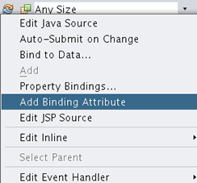
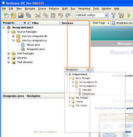
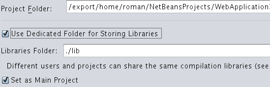

NetBeans IDE 6.1 – Faster, Better, Stronger
NetBeans
IDE version 6.1 has been released recently. This version comes
relatively soon after its widely successful predecessor – NetBeans
IDE 6.0. Although NetBeans 6.1 is not as revolutionary as 6.0 (which
brought a completely redesigned Java editor), the new release has
many new features. In this article we'll discuss the new features one
by one. This article only covers the major improvements, so if you
want to see a complete list please visit the 6.1 New
and Noteworthy
page.

Let's look at what is new and improved in the new release.
Performance and Quality
The
main themes of the release are performance and quality – after all, as
a minor release it stabilizes the previous major release.
These goals are rather intangible but developers should notice a
faster startup (up to 40% over version 6.0 if multiple
projects are open) and different performance boosts all across the
board. One of the big issues in 6.0 was slow parsing of JSP files, and
feedback from the NetBeans community indicates that version 6.1
doesn't suffer from this problem anymore. A new incremental parser
has been integrated into the Java editor, so all Java syntax related
features such as code completion, navigator, refactorings, etc.
should be noticeably faster, especially on large classes. Several I/O
related optimizations have been used to reduce the number of disk
accesses, improving responsiveness in many cases.
One
performance improvement needs closer examination – the Visual Web
Designer received many performance-related fixes leading to lower
memory usage. The performance team fixed several issues with memory
leaks which may have caused the Visual Designer to grow consumption
of memory over time. The most significant change, though, is that the
binding attributes no longer get generated by default – which leads
to many performance improvements because the classes generated by
Visual Web are much smaller and do not include unnecessary
attributes, getters and setters. However, this change may be
surprising to some users – you need to make sure you
generate the necessary binding attribute to have access to the
element you want to manipulate, as seen on the screenshot:

In
the beginning it may be surprising that you need to add binding
attributes for each page element you want to manipulate, but the
performance gains are definitely worth the extra work.
New JavaScript Editor
Screencast:
New JavaScript editor in NetBeans 6.1
NetBeans 6.1 provides a brand new JavaScript editor
based on the GSF framework (General
Scripting Framework) which was introduced together with Ruby editor
in 6.0. It took only a few months to provide many new JavaScript
editing features, such as:
- Semantic highlighting
- Mark occurrences
- Instant rename
- Rename refactoring
- Quick fixes and semantic checks
- Tasklist integration
- Code completion and type analysis
- JavaScript documentation in code completion
- Browser compatibility information in code completion
- Go to declaration
- Open JavaScript type
- ... and much more.
The
editing experience with JavaScript in version 6.1 is similar to the
Java and Ruby editors. Work on a JavaScript debugger is in progress
and its first prototype should be demo-ed at NetBeans Day in San
Francisco in May 2008.
Window System Improvements
NetBeans
always had a modern and flexible window system. In version 6.1, the
visual reactions of the IDE during drag & drop have been
significantly improved, so you can see the preview of the dragged
window and also get visual feedback in case you try to place the
window into a forbidden area.

Sharability of Projects (aka Sharable Libraries)
This new feature in Java, Web and all J2EE project types allows you
to
create projects that share definitions and libraries. That in turn
allows you to create self-contained projects or a set of projects that
can be built from the command line, on continuous integration servers
and by users of other IDEs without problems. In the past, the IDE used
absolute paths to reference the libraries. With the new
Sharable Libraries feature, the IDE uses relative paths so you can make
sure your projects will open easily on other computers or build
outside of the IDE.

Plug-in Manager Improvements
In
the past if you had a slow connection and were downloading
various plug-ins, the IDE would be unusable until the plug-ins were
downloaded and installed. In version 6.1 you can run the download
task in the background, as seen on the screenshot. The IDE also
shows a visual indication in case new plug-ins have been discovered.
Mercurial Support
The NetBeans source code base has been moved from CVS to Mercurial,
which
is a distributed versioning system. This change brings many
advantages to the NetBeans IDE, including the ability to have several
levels of repositories, easier branching and more. For this reason,
NetBeans 6.1 now also provides built-in Mercurial support, along with
CVS
and Subversion.
Popular Features are Back
Due
to editor infrastructure changes some of the popular features had to
be dropped in the 6.0 release because there was not enough time to
rewrite them to the new infrastructure. These features have been
added back in version 6.1:
- JSF pages from entities wizard
- Java Beans support
- BeanInfo editor
Ruby Additions
Rails 2.0 is now supported and bundled with NetBeans IDE 6.1. There
is also a
new platform manager for Ruby which lets you choose easily between
native Ruby and JRuby runtimes. The Ruby editor has been integrated
into the Task List feature, and many quick fixes have been added to
make
Ruby
editing even more productive. Many other usability and productivity
improvements have been integrated, check the New and
Noteworthy page
for a complete list of changes.
More Technologies Supported
NetBeans
6.1 added support for many additional technologies and frameworks:
- Sailfin v1 support (SIP application server based on project
Glassfish)
- WebSphere 6.0 and 6.1 supported now out of the box
- Spring framework now supported out of the box
- Groovy and Grails plug-ins now available on the update center
- Hibernate framework plug-in now
available on the update center
- Axis2 plug-in now available on the update center
- PHP plug-in available in preview
MySQL Support
Due to the recent acquisition of MySQL AB by Sun Microsystems, the
NetBeans IDE
6.1 added integration with MySQL. You can start or stop the MySQL
server right from the IDE. A default connection is generated for you,
and you can browse database tables easily and create connections to
these tables with one click. Getting started developing with
the NetBeans IDE and MySQL is even easier than before.
Mobility
In the Java ME area, Mac OS X is now officially supported and the
Mpower
emulater can be easily used from the IDE. Several new SVG components
have been added and the quality and stability of Mobility Pack has
been enhanced as well.
RESTful Web Services Support
The RESTful web service support in the Netbeans IDE is based on the
JSR
311 standard. The IDE has a wizard to create RESTful services from
JPA entity classes. You can also create RESTful services based on
popular design patterns provided by the IDE. Another wizard generates
JavaScript client stubs that invoke these services. A popular feature
is the test client that provides an interactive way to test and view
the result of web service invocations. RESTful web service support
was available since NetBeans 6.0 as a plugin, now it is part of the
Netbeans IDE 6.1 standard distribution.
Support for Popular SaaS Services
The Web Services node in the Services tab has been enhanced to
support SaaS (Software as a Service) services such as services
provided by Google, Facebook, Yahoo!, and YouTube. This feature enables
Java
developers to easily create mashup applications using those services.
Developers can simply drag and drop operations under those services
into a POJO, Servlet, JSP or RESTful web service and the IDE will
generate all the plumbing code to access those services.
There are many other new features I didn't discuss yet – for
example the improved Javadoc code completion, inspect members and
inspect hierarchy improvements, SOAP UI monitor integration, WSDL,
XML and XSD editor enhancements and much more. Again, please visit
the New and Noteworthy page for NetBeans 6.1 to see all the
improvements.
Although NetBeans 6.1 is a point release, the amount of new features
is very impressive. It is clear that NetBeans is going to
expand into new communities mainly because it currently provides a
very large collection of new plug-ins for various technologies that
were not well supported before, such as JavaScript, Groovy, PHP,
Hibernate, Spring, Axis and others. Thanks to the performance fixes
NetBeans will appeal to users with older computers who wouldn't
consider NetBeans before. Again, these are exciting days for the
NetBeans community!
For more information about NetBeans IDE 6.1 visit:
NetBeans IDE 6.1 Features Pages
NetBeans IDE 6.1 Tutorials and Documentation
As always, we welcome and encourage your feedback on our mailing lists and on your blogs.
(May
2008)
{kind=link}